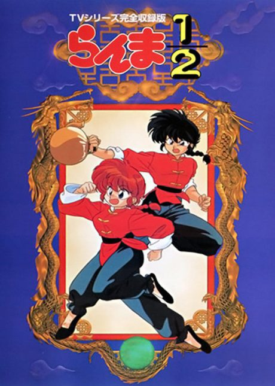
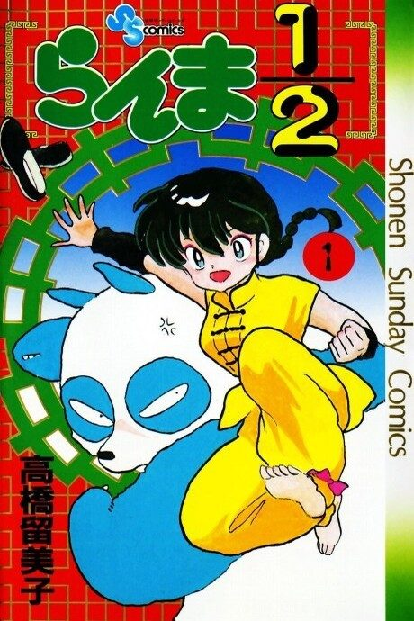

Ranma ½
らんま1/2
After the anime, read the manga from Chapter 230.
7.5AniList score
—Animeter, no votes yet
161episodes, 2 seasons
2 seasons, 161 episodes
In airing order. Episode numbers on this site count straight through every season, so season 2 starts at episode 19.
1
1989 · TV
Ranma ½
Episodes1–1818 ep
2
1989 · TV
Ranma ½ (1989)
Episodes19–161143 ep
Films, OVAs and specials
Not counted in the episode numbers above.
·
1993 · OVA
Ranma ½ (OVA)
·
1994 · Film
Ranma ½: One Flew Over the Kuno's Nest
·
1994 · OVA
Ranma 1/2 Special
·
1995 · OVA
Ranma 1/2 SUPER
·
2008 · OVA
Ranma 1/2: Akumu! Shunmin Kou
Sources: AniList